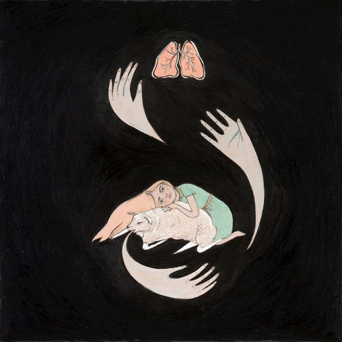

Purity Ring
The chilly electro-pop project of Corin Roddick and Megan James, Purity Ring began when the two were in Canadian indie rock act Gobble Gobble (which later became Born Gold). While the band was on tour, Roddick and James grew increasingly inspired by the sounds of contemporary R&B and wanted to make music reflecting that. Their first song, "Ungirthed," arrived in January 2011 to critical acclaim, and Purity Ring eventually signed with 4AD Records. Shrines, the duo's debut album, was released in July 2012. The following year, Purity Ring collaborated with Danny Brown on the track "25 Bucks."
After touring in support of Shrines, Roddick and James began making new music, this time working together in person in Edmonton instead of collaborating online as they had on their debut. The results were 2015's Another Eternity, a dynamic, streamlined set of songs featuring more revealing lyrics from James and Roddick's hip-hop-inspired production.